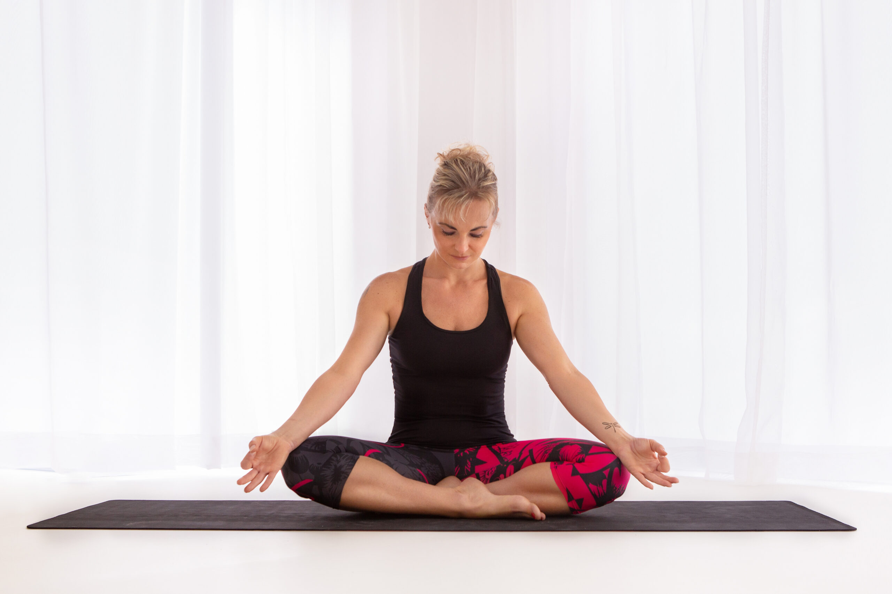
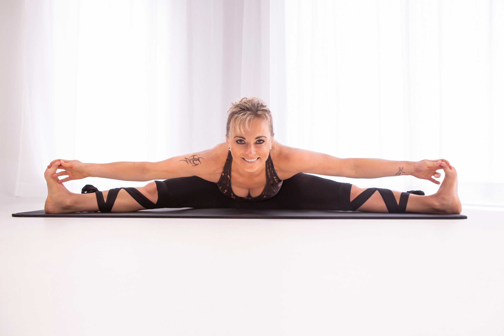

Provázím vás pohybem k lepší kondici, zdraví i vnitřnímu klidu

Dobrý den, jmenuji se Lenka. Moje lekce v Boskovicích nejsou o dokonalých pozicích z Instagramu, ale o vás. Věřím, že pohyb má přinášet radost, uvolnění od každodenních povinností a novou energii do života. Jógu, jumping, tabatu, HIIT i kruhové tréninky učím tak, jak to sama cítím – upřímně, od srdce a s respektem k možnostem vašeho těla.
Odbornost a kvalita pro vaše bezpečí: Jsem učitelkou jógy III. třídy, certifikovanou instruktorkou jógy a jumpingu a licencovanou trenérkou TRX. Dohlížím na to, aby pro vás byl každý pohyb bezpečný, zdravý a anatomicky správně provedený.
Lekce na míru vaší kondici: Každý trénink přizpůsobuji tomu, kdo na něj zrovna přijde. Ať už s pohybem začínáte, nebo makáte roky, pro každý cvik vám ukážu snazší i pokročilejší variantu. Tempo si určujete vždy vy sami.
Restart pro tělo i mysl: Pomohu vám na chvíli vypnout od pracovního i osobního kolotoče starostí, protáhnout ztuhlé svaly ze sezení a domů odejít s lehkostí, čistou hlavou a novou vlnou energie.
